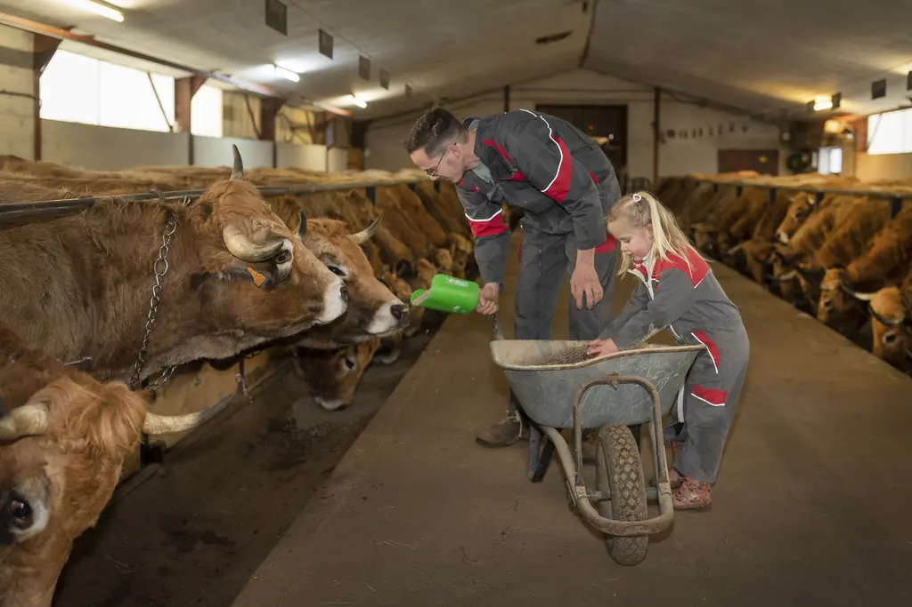
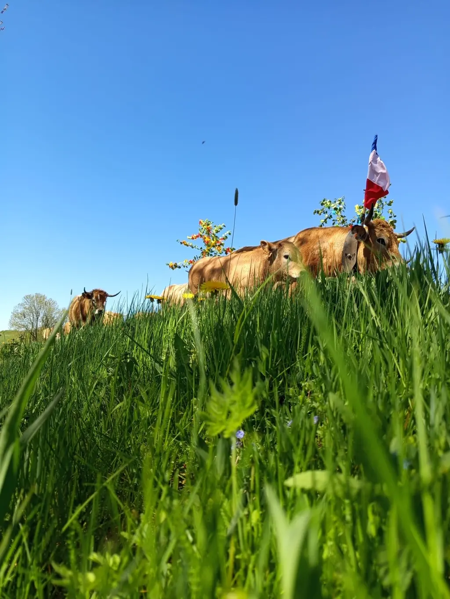
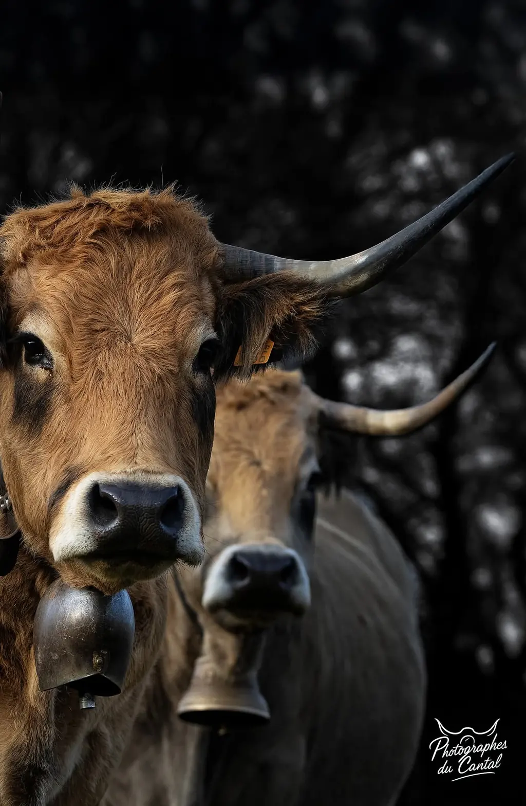
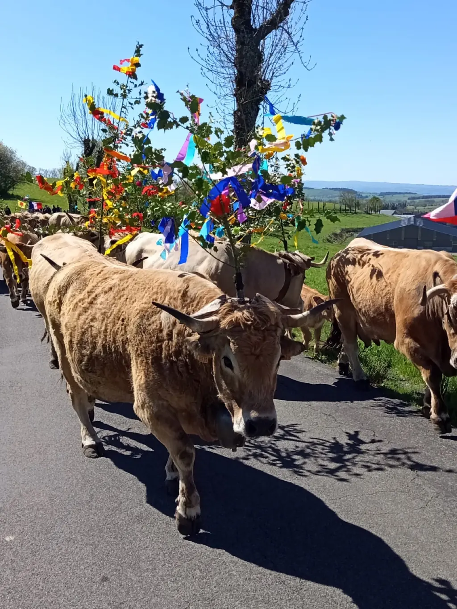
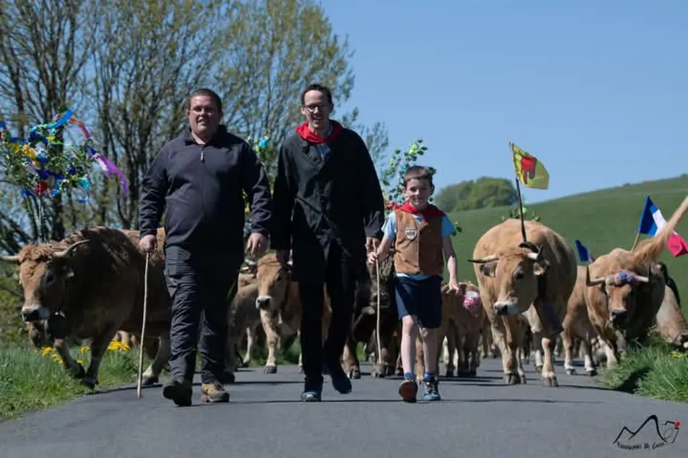
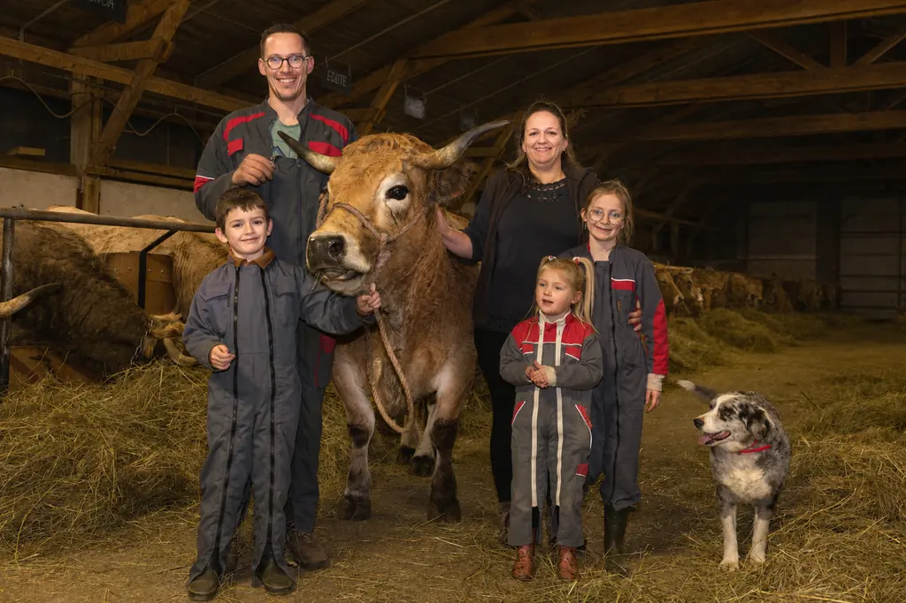
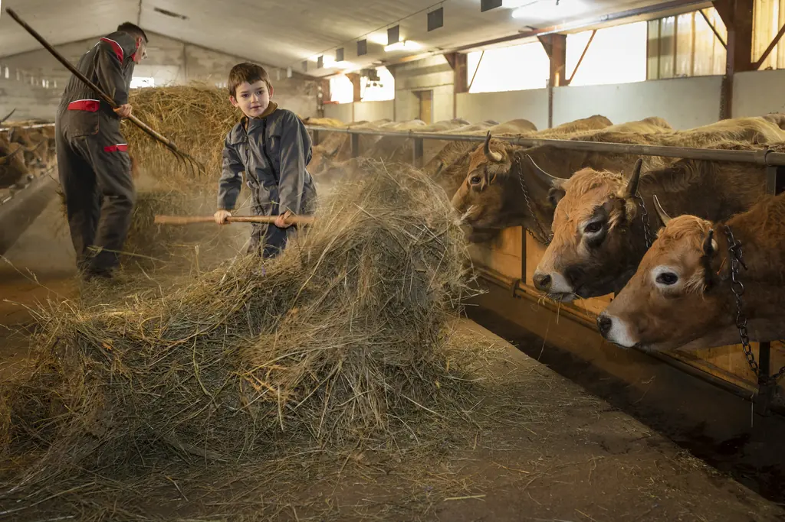
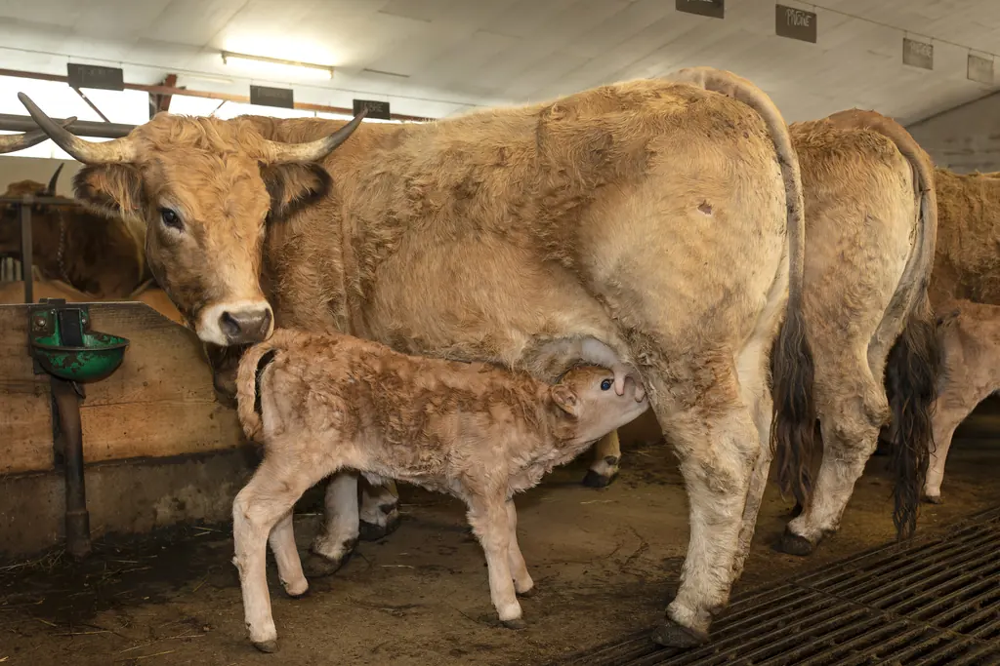
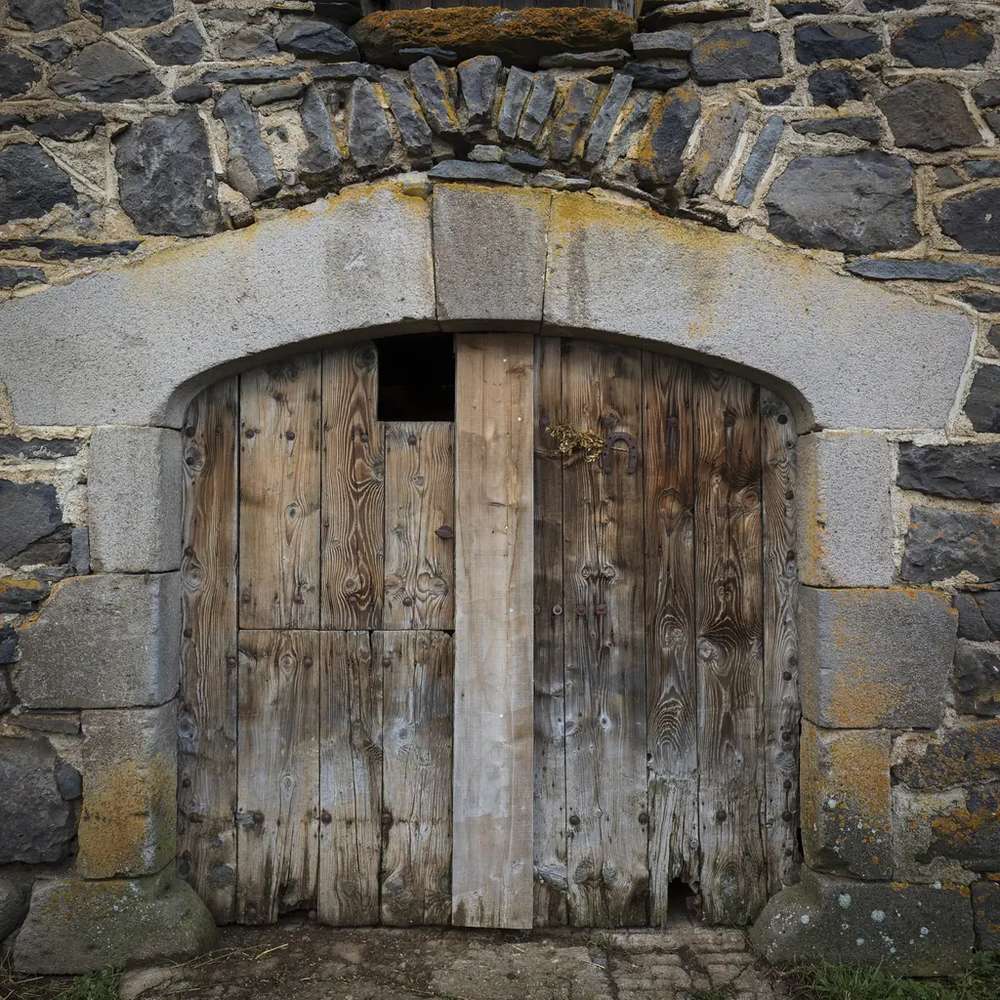
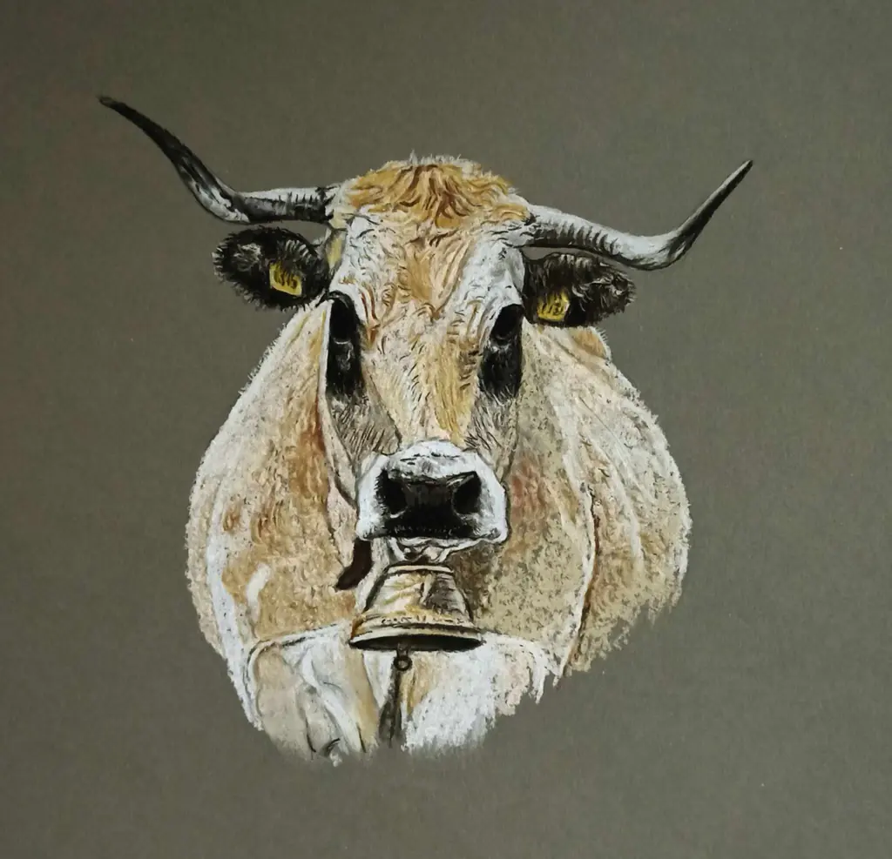

80
Mères Aubrac
Conduites en race pure, sans croisement. La sélection porte sur l'aptitude au plein air et la facilité de vêlage.
Cézens · Cantal · Aubrac
Naturellement Aubrac
Élevage Aubrac race pure & charcuterie artisanale
aux recettes ancestrales

Une ferme se résume mal en trois lignes. Celle-ci tient à une famille installée à Cézens, sur la Planèze, et à un troupeau d'Aubrac conduit en race pure. La charcuterie, puis l'auberge du village, sont venues par prolongement.
Ce qui ne se voit pas depuis la route : les veaux naissent ici, grandissent ici, et c'est encore ici que la viande est transformée. Peu d'exploitations tiennent la chaîne d'un bout à l'autre.
Élodie et les enfants prennent part au quotidien de l'exploitation. L'histoire de la ferme raconte comment elle en est arrivée là.
L'Aubrac n'a pas été retenue pour son allure, même si elle en a. C'est une race qui tient l'hiver à mille mètres, qui vêle seule, et qui valorise une herbe courte que d'autres bovins laisseraient. Sur la Planèze, cela pèse plus lourd qu'un palmarès.
Conduites en race pure, sans croisement. La sélection porte sur l'aptitude au plein air et la facilité de vêlage.

L'herbe du plateau en estive, le foin récolté sur la ferme l'hiver. Aucun aliment industriel n'entre dans la ration.

Vingt de deux ans, vingt d'un an. De quoi renouveler le troupeau sans jamais acheter une bête à l'extérieur.
Ce qui est vendu ici vient des bêtes élevées ici. La transformation se fait sur l'exploitation, d'après des recettes de famille — ce qui signifie surtout qu'elles ont été corrigées pendant des décennies.

Le saucisson de bœuf Aubrac est la pièce qui surprend les visiteurs. Dans le Cantal, la charcuterie sèche est presque toujours porcine ; quand on élève des bovins à viande, la saler est pourtant logique.

Le porc suit les méthodes anciennes, sans raccourci sur le temps de séchage. C'est la partie la plus classique de la gamme, et celle que les habitués viennent chercher.
Au printemps, les troupeaux montent vers les estives. Ce n'est pas une reconstitution pour visiteurs : les bêtes changent réellement de pâture pour l'été, et la fête de la transhumance existe parce que le déplacement existe.
La ferme y participe chaque année. Les animaux sont parés de fleurs et de rubans le jour de la montée, puis redescendent à l'automne, quand l'herbe vient à manquer.
Entre ces deux dates, tout le rythme de l'exploitation suit celui de l'herbe. Le détail des saisons.


Revenir à l'essentiel. Des animaux bien élevés, un sol respecté, des produits vrais. Pas de compromis sur la qualité, pas d'artifices dans les méthodes.
Fier du Cantal et de l'Aubrac, Thomas Gras élève des animaux en parfaite adéquation avec leur environnement naturel. L'identité du lieu s'exprime dans chaque produit.
Foin de prairie naturelle récolté sur la ferme, herbe fraîche en estive : nos animaux se nourrissent exclusivement de ce que la terre produit.
Une ferme familiale où les enfants grandissent au rythme des saisons et des animaux. Les savoir-faire ancestraux se transmettent de génération en génération.

La Ferme du Graillou dispose de sa propre boutique de vente directe à la ferme. Un endroit chaleureux pour découvrir et acheter l'ensemble de nos charcuteries artisanales.
Venez à la rencontre de Thomas et de sa famille, découvrez les coulisses d'un élevage passionné, et repartez avec les saveurs authentiques du Cantal directement sous le bras.
La Ferme du Graillou est située au Bourg, à Cézens (15230) dans le Cantal, au cœur du plateau de l'Aubrac en Auvergne. Elle est facilement accessible depuis Saint-Flour ou Murat.
Nos charcuteries sont disponibles en vente directe à la ferme dans notre boutique en bois à Cézens. Contactez-nous par téléphone ou email pour connaître les disponibilités et passer commande. Nous sommes également présents sur certains marchés locaux.
L'Aubrac est une race bovine rustique et docile, originaire du plateau du même nom en Aveyron et Cantal. Reconnue pour la qualité exceptionnelle de sa viande persillée et sa robustesse, elle est parfaitement adaptée aux conditions des hauts plateaux. À la Ferme du Graillou, le troupeau est conduit en race pure et sélection.
Nos 80 vaches Aubrac sont nourries exclusivement au foin de prairie naturelle récolté sur la ferme en hiver, et bénéficient de pâturages naturels en libre accès durant l'estive. Aucun aliment industriel, aucun intrant extérieur : une alimentation 100% naturelle et locale.
Nous proposons une gamme complète de charcuterie artisanale :
Tous nos produits sont élaborés selon des recettes traditionnelles et ancestrales.
Nos produits sont principalement disponibles en vente directe à la ferme. Pour toute demande de livraison ou de commande à distance, contactez-nous directement par téléphone ou email afin de trouver la solution la plus adaptée.
Des avis laissés sur Google par des personnes qui ont poussé la porte de la ferme. Nous les reproduisons tels quels, sans les retoucher.
Si vous êtes à la recherche d'échanges authentiques et d'un cadre magnifique, c'est à la ferme du Graillou qu'il faut aller. Notre repas entre amis dans les estives a été une merveilleuse expérience pour notre groupe d'amis. Thomas, Elodie et leurs enfants ont su faire de cette soirée de juillet une parenthèse magique. Encore merci.
Jeune éleveur qui adore son métier… ses vaches de la race Aubrac sont magnifiques… visite de l'exploitation à faire absolument… repas à la ferme possible sur réservation
Un grand merci à Thomas et Elodie. Nous avons passé une super soirée à la ferme du Graillou avec un excellent repas au milieu des estives. Merci aussi pour la visite très intéressante de la ferme !
Une vraie famille d'agriculteurs, des produits excellents et un accueil très chaleureux, que demander de plus ? C'était magique !
Très bon accueil et une belle boutique bien achalandée à des prix raisonnables. On sent que les animaux de cette ferme sont heureux car ils vivent en liberté.
Très bon accueil, plein d'explications, une très belle visite ! La boutique propose un choix de produits variés.
Très jolie visite et très jolie ferme. Foncez !
Un couple très sympathique et de la délicieuse viande ! Que demander de plus ?





La Ferme du Graillou vous accueille à Cézens dans le Cantal pour découvrir ses produits et son élevage Aubrac.